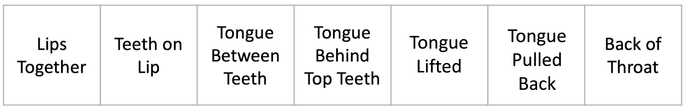
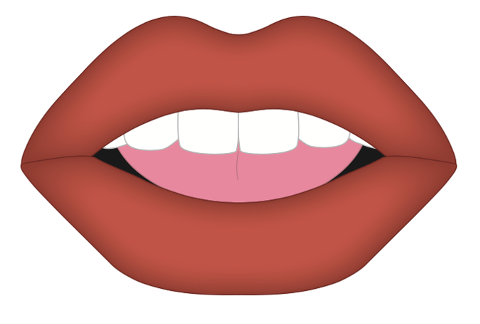
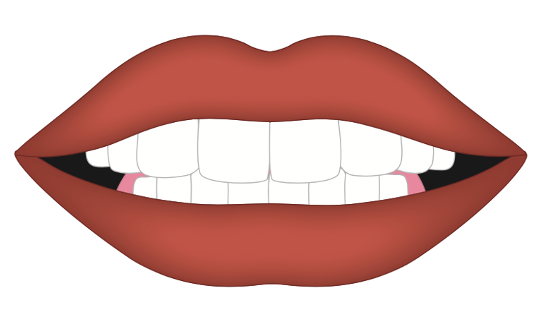
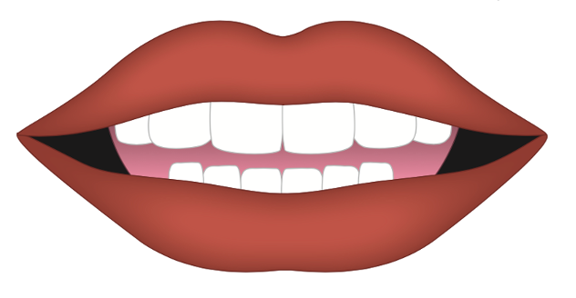
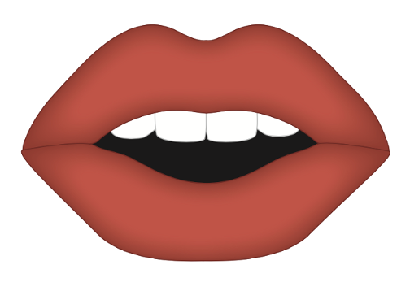
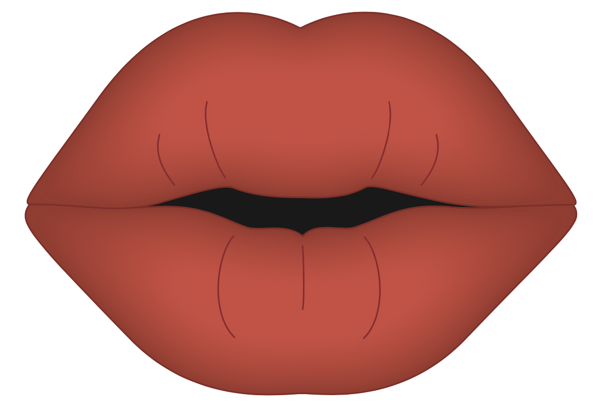
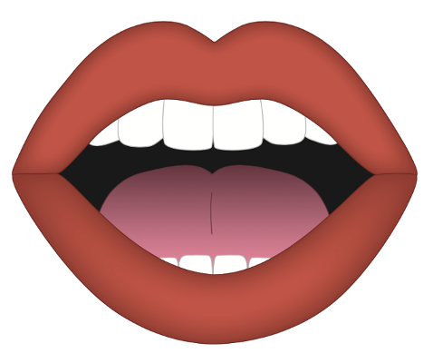
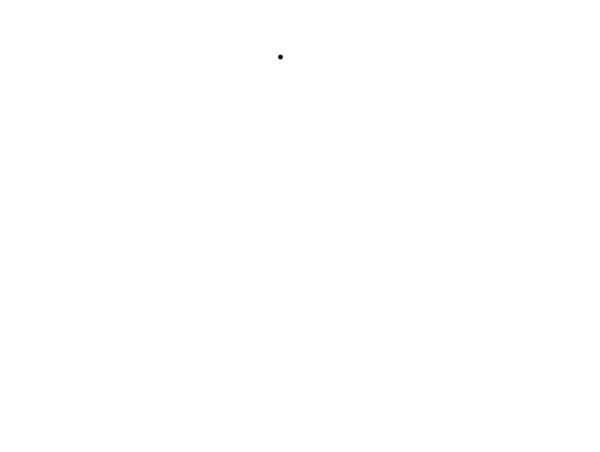
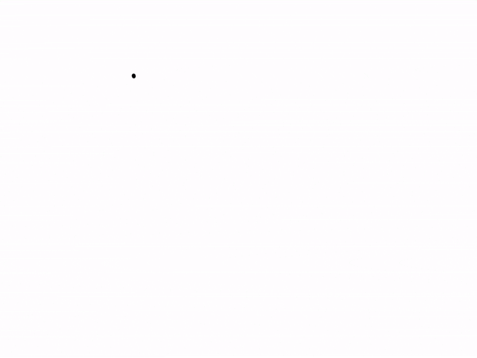

Getting Ready
Lesson B

ufliteracy.org


See UFLI Foundations Getting Ready lesson plans for sound wall activity.
The sound wall activity may be completed with either the digital sound wall slides provided here or physical sound wall cards displayed in your classroom.



Consonants
Introduction: Place of Articulation

Consonants
/p/, /b/, /m/
Consonants

/f/, /v/
Consonants

/th/, /th/
Consonants


/t/, /d/, /n/
/s/, /z/
Consonants



/sh/, /zh/, /ch/, /j/
/y/
/r/
Consonants


/k/, /g/, /ŋ/
/w/
Consonants

/h/


See UFLI Foundations Getting Ready lesson plans for alphabet knowledge and letter formation activity.
Vertical Lines

Watch me write
Let’s write together

vertical line gif
Horizontal Lines

Watch me write
Let’s write together
horizontal line gif
Slanted Lines


Watch me write
Let’s write together

\ slant gif
Watch me write
Let’s write together
/ slant gif


Insert brief reinforcement activity and/or transition to next part of reading block.